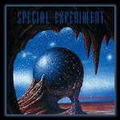

| Artist: | Special Experiment |
| Title: | Fortune Memories |
| Label: | self produced |
| Length(s): | 45 minutes |
| Year(s) of release: | 2002 |
| Month of review: | [04/2003] |
| 1) | Kiss Of A Vampire | 5.28 |
| 2) | Centre Opti Fuga | 5.23 |
| 3) | Fortune Memories | 5.07 |
| 4) | Night Over Marakesh | 6.40 |
| 5) | King Of Twilight | 4.34 |
| 6) | Dark Angel | 7.18 |
| 7) | Ametyst Eye | 5.51 |
| 8) | Crystal Lake | 4.58 |
With Centre Opti Fuga we move into quieter waters, the synths playing in a flutish style. The melodies have this Toto feel over them, which means I guess that they are dominant and on the accessible side. In the middle we have time for a Floydian interlude with spaceous guitar, softly and wailing. Then the plodding rock sets in again, with the guitar doing the main solo's, but the keyboards adding their voice to it now and again.3
Fortune Memories find us admitst heavy plodding drums alternating with some very good guitar lines. I think this would be perfect music for a television series, and I do not mean this in any disrespectful way. The tunefulness and catchiness of the music simply has that quality. Listen for instance to the keyboard, can I call it chorus? Of course, this type of music is probably not very popular anymore for television series, but a good series at the beginning of the nineties or the end of the eighties... Well, it may be a bit too heavy. A mature and catchy rock tune.
In Night Over Marakesh we expect some Arabic influences. It does start out a bit spookily with soft bell like sounds. In fact, the entire opening here builds slowly but steadily toward something of a climax. This is very well-done, not too overt and not too frantic either. I think more could have been done in the drum department, which continues to be rather straightforward, almost automatic. The guitar ends the song in a slow fashion. At times the general feel of the music is electronic notwithstanding the use of guitar.
Exactly halfway we now arrive at King Of Twilight. Although it enjoys a rather calm opening, your ears burst when we come to the instrumental chorus. Very energetic, very full. Then it's back to the piano and acoustic guitar again. In this we alternate between these two extremes. Taking a bit more chances in the composition could have helped this track. Now it is all a bit on the obvious side.
Some vocals, of the vague female sort, can be found on Dark Angel. The sameness is creeping into the music now. The prepared piano, almost like a harpsichord, but not quite, hammers away, but the song never gets over being a vague one. The instrumental interlude on piano also does not help me get a grip.
Ametyst Eye is one in which guitars, both acoustic and electric, are the leading instruments. Overall this is a rather soft track, with some sensitive lead playing. Later the playing becomes more emotional, the synth solos pale by comparison being a bit on the meandering side, like a kid who wants to tag along, but cannot keep up. At times the music remninds me of Tangerine Dream during Optical Race, but less percussive and more on the guitar. It is also more definitely in a rock format here and that calls for real drums, not drum computers.
Finally, we close shop with Crystal Lake, which opens with Spanish guitar and soft keys. The drums sound a bit far away and flat here. In a relaxed fashion the guitar solos till fade.